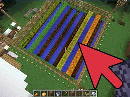

How to Garden
1. To garden, you need a hoe(see crafting to build a hoe). Then. find an area close to your home to farm. Next with your hoe, tap the grass. It should come out as a dirt lump. Then, keep doing this until you think it's the right length. Then, skip a row and do the same. Do this for about 3-4 rows. Then, break the spots you skiped. Fill the spots in with water. 2.The most important crop is wheat. To get wheat, break some realy tall grass. You should get seeds. Plant the seeds in the dirt patches. Harvest the wheat when the bottom is brown. To get carrots and pottatoes. You have to find them. When you do, place the potatoes or carrots on the dirt patches. You know they're ready when they're big and you can barely see the bottom. 3.To plant mellons, you have to find them. Once you do, place them on the ground. they're will apear as a vine but to me, it looks like a stick. You know they're ready when they grow into a block. 4. If you're unpatient, there is this material called bone meal. All you to do is get some bone(kill a skelleton). Then, place the bones you have all in 1 slot of the crafting table. To use bone meal, tap the crop and it will grow. If you tap the crop, green sparkles will apear 